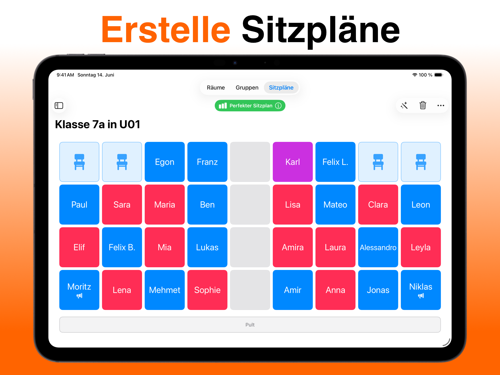
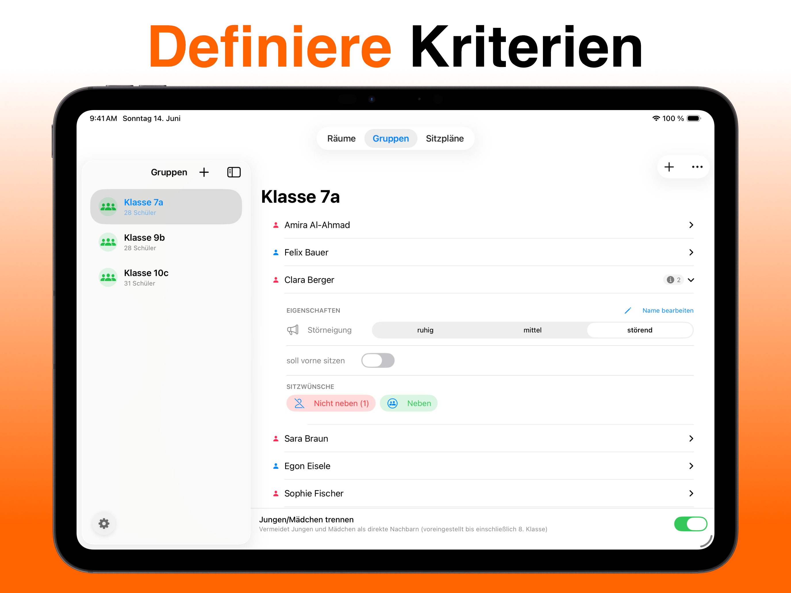
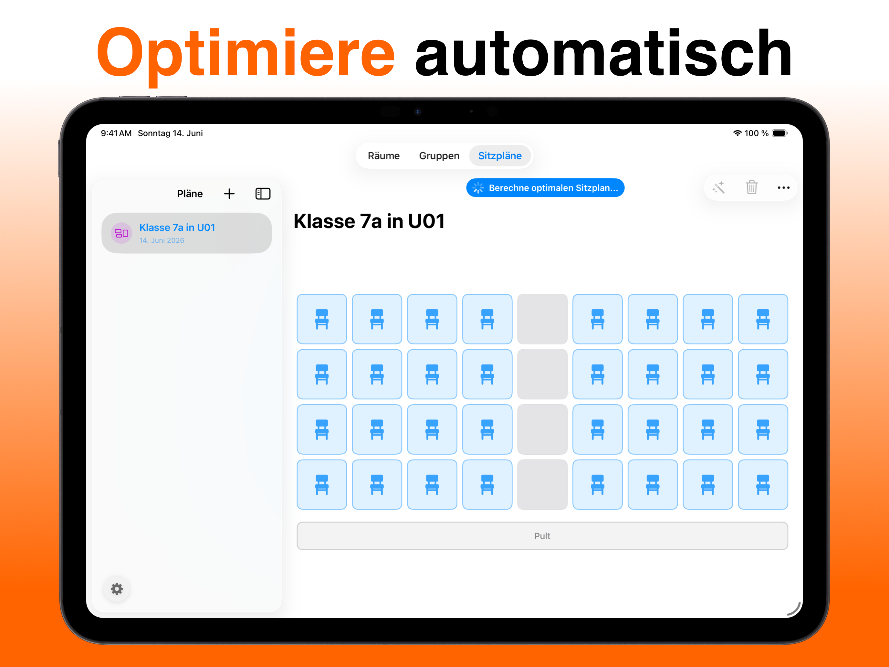
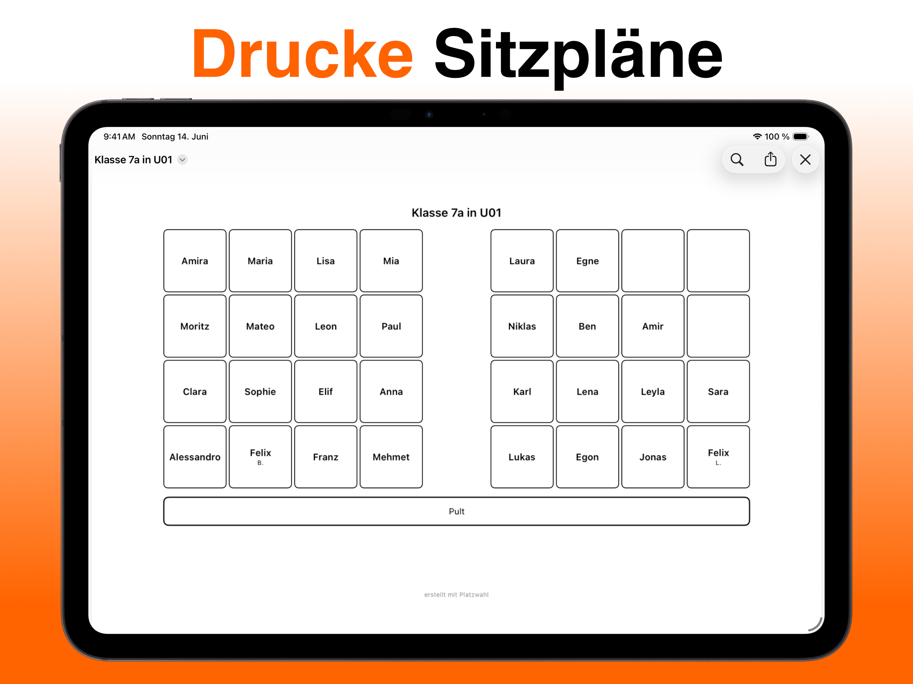

Platzwahl
Die Sitzplan-App für Lehrkräfte: Sitzplan erstellen auf Knopfdruck — automatisch, fair verteilt, druckfertig als PDF.
Die Sitzplan-App für Lehrkräfte: Sitzplan erstellen auf Knopfdruck — automatisch, fair verteilt, druckfertig als PDF.





Features
Einmal tippen — Platzwahl verteilt alle Schülerinnen und Schüler automatisch und regelkonform. Kein manuelles Schieben, kein Ausprobieren.
Tische setzen, Lücken lassen, Pult platzieren — bilde deinen Klassenraum exakt nach. Jede Anordnung ist möglich.
Störneigung, Sitzwünsche, vorne sitzen — individuelle Regeln fließen direkt in die Berechnung ein.
Jede Regelabweichung wird erklärt und gewichtet. Du siehst genau, warum ein Plan gut — oder noch verbesserungswürdig — ist.
Sauberer Sitzplan als PDF — ausdrucken, aufs Pult kleben, fertig. Kein Nachbearbeiten nötig.
Mit Platzwahl einen Sitzplan erstellen dauert Minuten — nicht eine Stunde. Raum einmal einrichten, Klasse einpflegen, Regeln festlegen. Ab dann erledigt die App die Arbeit: Sie verteilt alle fair, zeigt Regelkonflikte transparent an und gibt das Ergebnis direkt als druckfertiges PDF aus. Keine Cloud, keine Anmeldung, keine Ablenkung.
So funktioniert's
Zeichne dein Klassenzimmer als Raster — tippe Sitze an oder male ganze Bereiche mit dem Finger. Reihen, U-Form, Gruppentische: jede Anordnung ist möglich.
Schüler eintragen oder per CSV aus Excel importieren. Dann pro Schüler markieren: Störpotenzial, vorderer Platz, Wunschnachbarn, Trennungen.
Der genetische Algorithmus berechnet den bestmöglichen Sitzplan. Ein Score zeigt, wie gut alle Regeln erfüllt sind — jede Abweichung wird erklärt.
Fertigen Plan exportieren, ausdrucken, aufs Pult legen. Neuer Plan nötig? Ein Tipp genügt.
Ratgeber
In 5 Minuten zum fertigen Plan — worauf es wirklich ankommt.
Zum Ratgeber →Warum Zufall nicht reicht — und wie der Algorithmus arbeitet.
Zum Ratgeber →Reihen, U-Form, Gruppentische — Ideen auch für unruhige Klassen.
Zum Ratgeber →Was in Klasse 1–4 zählt — Ideen statt starrer Vorlagen.
Zum Ratgeber →App statt Excel — und warum Datenschutz das wichtigste Kriterium ist.
Zum Ratgeber →FAQ
Für Lehrkräfte aller Schularten, die Sitzpläne schnell und fair erstellen möchten — ohne stundenlanges Hin-und-her-Schieben oder Tabellen-Gefummel.
Mehr erfahren →Die App verteilt Schülerinnen und Schüler anhand individueller Regeln — Störneigung, Sitzwünsche, Jungen/Mädchen-Trennung — optimal auf die verfügbaren Plätze. Ein Score zeigt auf einen Blick, wie gut der Plan ist und welche Regeln noch verletzt werden.
Mehr erfahren →Nein. Alle eingetragenen Namen und Regeln bleiben ausschließlich lokal auf deinem Gerät. Es findet keine Übertragung an externe Server statt — weder von uns noch von Drittanbietern.
Mehr erfahren →Ja. Du kannst beliebig viele Räume und Klassen anlegen und jeweils eigene Sitzpläne erstellen. Alles bleibt gespeichert.
Mehr erfahren →Ja. Jeder Sitzplan lässt sich direkt als PDF exportieren — sauber, ohne Aufwand, sofort druckfertig.
Mehr erfahren →Ja. Platzwahl ist kostenlos im App Store erhältlich. Platzwahl Pro schaltet optional unbegrenzt viele Räume, Gruppen und Sitzpläne frei.
Mehr erfahren →Ja. Exportiere die Klassenliste als CSV-Datei aus Excel oder Google Sheets und importiere sie direkt in Platzwahl — die ganze Klasse ist in Sekunden angelegt.
Mehr erfahren →Der nächste Sitzplan dauert eine Minute.
Gratis laden — und nie wieder Namen hin- und herschieben.